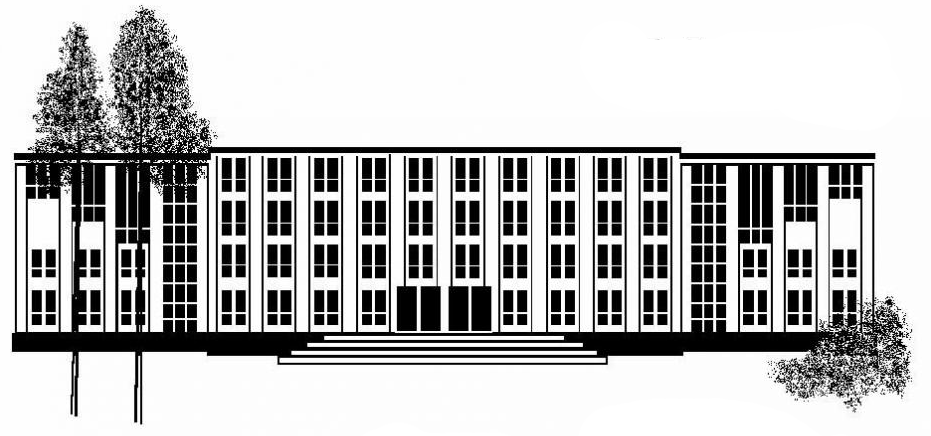

О лаборатории
enРазвитие новых поколений космической техники, таких как высокоэкономичные ракетоносители и возвращаемые аппараты, малые спутники, межпланетные космические корабли, невозможно без глубокой проработки ряда крупных научных проблем. Одной из ключевых задач в этом направлении является улучшение нашего понимания неравновесных течений, кардинальное повышение возможностей инженеров и ученых описывать и предсказывать их свойства. Эта задача может быть решена только с помощью комплексных теоретических, расчетных и экспериментальных исследований, сочетающих существенно новый уровень теоретического описания и математического моделирования, использование всей мощи современных компьютеров, совершенствование экспериментальной техники и применение новых средств диагностики, позволяющих получать гораздо больший объем разнообразной информации об исследуемом течении. Достижение тесного взаимодействия теории, численного моделирования и эксперимента, проведение комплексных исследований, нацеленных на получение фундаментальных знаний, которые могут стать научной основой для новых, прорывных космических технологий, и является задачей Лаборатории неравновесных течений и аэротермодинамики космических аппаратов, созданной на базе Новосибирского национального исследовательского государственного университета, под руководством профессора астронавтики Университета Южной Калифорнии (США) Сергея Гимельшейна.
Лаборатория объединяет активно работающих исследователей из Новосибирского университета и двух лабораторий, Лаборатории вычислительной аэродинамики и Лаборатории физических проблем управления газодинамическими течениями, Института теоретической и прикладной механики им. С.А. Христиановича СО РАН, давно и плодотворно сотрудничающих с НГУ в рамках кафедры аэрофизики и газовой динамики физического факультета НГУ. Лаборатория позволит организовать проведение исследований мирового уровня в областях науки, которые образуют основу современных и перспективных космических технологий, а также даст возможность развернуть подготовку специалистов для российской космической промышленности, способных применять на практике самые современные вычислительные и экспериментальные методы.
